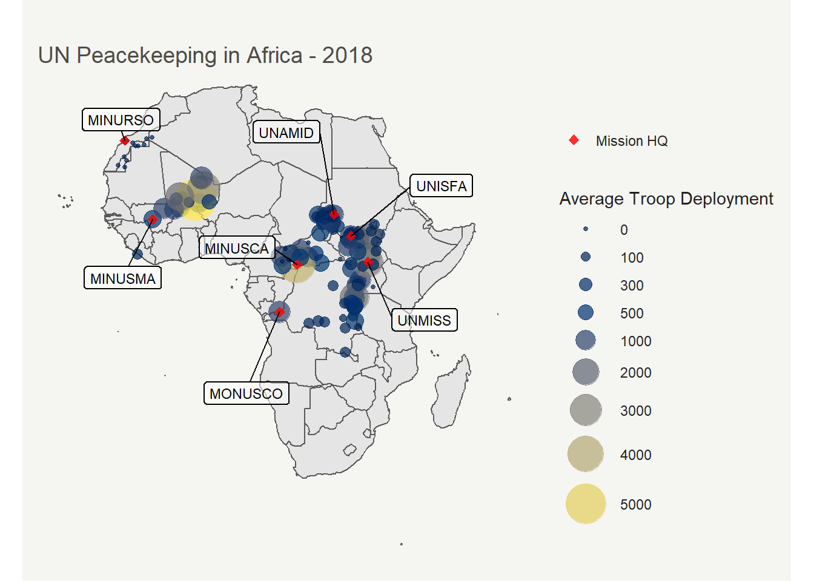

Mapping blue helmets
Last updated: 2020-08-13
Checks: 7 0
Knit directory: GeoPKO/
This reproducible R Markdown analysis was created with workflowr (version 1.6.2). The Checks tab describes the reproducibility checks that were applied when the results were created. The Past versions tab lists the development history.
Great! Since the R Markdown file has been committed to the Git repository, you know the exact version of the code that produced these results.
Great job! The global environment was empty. Objects defined in the global environment can affect the analysis in your R Markdown file in unknown ways. For reproduciblity it’s best to always run the code in an empty environment.
The command set.seed(20200629) was run prior to running the code in the R Markdown file. Setting a seed ensures that any results that rely on randomness, e.g. subsampling or permutations, are reproducible.
Great job! Recording the operating system, R version, and package versions is critical for reproducibility.
Nice! There were no cached chunks for this analysis, so you can be confident that you successfully produced the results during this run.
Great job! Using relative paths to the files within your workflowr project makes it easier to run your code on other machines.
Great! You are using Git for version control. Tracking code development and connecting the code version to the results is critical for reproducibility.
The results in this page were generated with repository version 4343536. See the Past versions tab to see a history of the changes made to the R Markdown and HTML files.
Note that you need to be careful to ensure that all relevant files for the analysis have been committed to Git prior to generating the results (you can use wflow_publish or wflow_git_commit). workflowr only checks the R Markdown file, but you know if there are other scripts or data files that it depends on. Below is the status of the Git repository when the results were generated:
Ignored files:
Ignored: .Rhistory
Ignored: .Rproj.user/
Untracked files:
Untracked: 2020_07_21.R
Untracked: figure/viz.Rmd/
Note that any generated files, e.g. HTML, png, CSS, etc., are not included in this status report because it is ok for generated content to have uncommitted changes.
These are the previous versions of the repository in which changes were made to the R Markdown (analysis/viz.Rmd) and HTML (docs/viz.html) files. If you’ve configured a remote Git repository (see ?wflow_git_remote), click on the hyperlinks in the table below to view the files as they were in that past version.
| File | Version | Author | Date | Message |
|---|---|---|---|---|
| Rmd | 4343536 | Nguyen Ha | 2020-08-13 | wflow_git_commit(all = TRUE) |
| html | 9a57942 | Nguyen Ha | 2020-08-13 | Build site. |
| Rmd | 3c3a981 | Nguyen Ha | 2020-08-13 | Updating new maps, new pages |
Visualizing deployment locations
An advantage to the Geo-PKO dataset is that it records the numbers of troops by their specific deployment locations. Therefore, users can quickly visualize where active troops are in a mission. Below are some examples of visuaization.
First, we can produce a quick snapshot of the deployment size in 2018, as well as the missions that were active in that year. We start by subsetting the main dataset to include entries for the year of 2018 and our variables of interests. GeoPKO reports deployment sizes according to the available maps published by the UN. Therefore, to obtain the numbers of troop deployment at the yearly level, we calculate the average number of troops per location over the months recorded.
library(tidyverse)
library(readr)
library(ggthemes)
library(knitr)
library(kableExtra)
GeoPKO <- read_csv("data/geopko.csv",
col_types = cols(.default="c")) #importing the dataset
GeoPKO$No.troops <- as.numeric(GeoPKO$No.troops) #changing the variable class for the number of troops
GeoPKO$latitude <- as.numeric(GeoPKO$latitude)
GeoPKO$longitude <- as.numeric(GeoPKO$longitude)
map2018df <- GeoPKO %>% filter(year==2018) %>%
select(Mission, year, location, latitude, longitude, No.troops, HQ, country) %>% #generating dataframe for 2018
group_by(location, Mission, latitude, longitude) %>%
mutate(ave = mean(No.troops, na.rm=TRUE)) %>% select(-No.troops) %>%
group_by(location, Mission) %>%
arrange(desc(HQ)) %>% slice(1)
kable(map2018df[90:95,], caption = "A preview of this dataframe") %>% kable_styling()| Mission | year | location | latitude | longitude | HQ | country | ave |
|---|---|---|---|---|---|---|---|
| UNISFA | 2018 | Madingthon | 9.601344 | 28.43138 | 0 | Sudan | 70 |
| MINURSO | 2018 | Mahbas | 27.424267 | -9.06598 | 0 | Western Sahara | 0 |
| UNMISS | 2018 | Malakal | 9.533424 | 31.66049 | 2 | South Sudan | 1930 |
| MONUSCO | 2018 | Manono | -7.300000 | 27.41667 | 0 | DRC | 150 |
| UNISFA | 2018 | Marial Achak | 9.479328 | 28.62492 | 0 | Sudan | 150 |
| UNAMID | 2018 | Masteri | 13.116667 | 22.15000 | 0 | Sudan | 150 |
Next, we obtain the geometric shapes from the package rnaturalearth, and filter for countries in Africa.
library(rnaturalearth)
library(rnaturalearthdata)
library(sf)
world <- ne_countries(scale = "medium", returnclass = "sf")
Africa <- world %>% filter(region_un == "Africa")Creating a prototype map showing size of deployment in 2018.
library(ggrepel)
library(viridis)
p2 <- ggplot(data=Africa) + geom_sf() +
geom_point(data = map2018df, aes(x=longitude, y=latitude, size= ave, color= ave), alpha=.7)+
scale_size_continuous(name="Average Troop Deployment", range=c(1,12), breaks=c(0, 100, 300, 500, 1000, 2000, 3000, 4000,5000)) +
scale_color_viridis(option="cividis", breaks=c(0, 100, 300, 500, 1000, 2000, 3000, 4000,5000), name="Average Troop Deployment" ) +
guides( colour = guide_legend()) +
geom_point(data = map2018df %>% filter(HQ==3), aes (x=longitude, y=latitude, shape="HQ"),
fill = "red", size=2, color="red", alpha=.8)+
scale_shape_manual(values=c(23), labels=c("HQ"="Mission HQ"), name="")+
geom_label_repel(data = map2018df %>% filter(HQ==3), aes(x=longitude, y=latitude, label=Mission),
min.segment.length = 0.2, label.size = 0.5,
box.padding = 2,
size = 3,
fill = alpha(c("white"),0.7),
shape=16, size=2) +
labs(title ="UN Peacekeeping in Africa - 2018", color='Average Troop Deployment') +
theme(
text = element_text(color = "#22211d"),
plot.background = element_rect(fill = "#f5f5f2", color = NA),
panel.background = element_rect(fill = "#f5f5f2", color = NA),
legend.background = element_rect(fill = "#f5f5f2", color = NA),
plot.title = element_text(size= 14, hjust=0.01, color = "#4e4d47", margin = margin(b = -0.1, t = 0.8, l = 4, unit = "cm")),
panel.grid=element_blank(),
axis.title=element_blank(),
axis.ticks=element_blank(),
axis.text=element_blank(),
legend.key=element_blank()
)
p2
Here is a similar visualization, but this time the color aesthetic for geom_point is mapped to shown country instead.
p3 <- ggplot(data=Africa) + geom_sf() +
geom_point(data=map2018df,
aes(x=longitude, y=latitude, size=ave, color=country), alpha=.4, shape=20)+
geom_point(data=map2018df %>%
filter(HQ==3),
aes(x=longitude, y=latitude), color="black", shape=16, size=2
) +
geom_label_repel(
data=map2018df %>%
filter(HQ==3),
min.segment.length = 0.2,
label.size = 0.5,
box.padding = 2,
size = 3,
fill = alpha(c("white"),0.7),
aes(x=longitude, y=latitude, label=Mission)
) +
labs(title="UN Peacekeeping Deployment and Mission HQs in Africa, 2018")+
scale_size(range = c(2, 16))+
labs(size="Average number of troops\n(continuous scale)",color="Country",shape="HQ")+
theme(
plot.background = element_rect(fill = "#f5f5f2", color = NA),
legend.background = element_rect(fill = "#f5f5f2", color = NA),
plot.title = element_text(size= 14, hjust=0.01, color = "#4e4d47", margin = margin(b = -0.1, t = 0.8, l = 4, unit = "cm")),
panel.grid=element_blank(),
axis.title=element_blank(),
axis.ticks=element_blank(),
axis.text=element_blank(),
panel.background=element_blank(),
legend.key = element_rect(fill = "#f5f5f2", color = NA),
legend.key.size = unit(1, 'lines')
)+
guides(colour=guide_legend(ncol=2,override.aes = list(size=5)),
size=guide_legend(ncol=2))
p3
How has this changed over the period covered by the dataset? An animated graph is great for this purpose. The first step is to prepare a dataframe, much similar to what has been done above for 2018. First we would calculate the average number of troops that is deployed to a location per mission per year, for every year between 1994 and 2018.
gif_df <- GeoPKO %>% select(Mission, year, location, latitude, longitude, No.troops, HQ) %>%
group_by(Mission, year, location) %>%
mutate(ave.no.troops = as.integer(mean(No.troops, na.rm=TRUE))) %>% select(-No.troops) %>% distinct() %>% drop_na(ave.no.troops)The animated graph is built on the above code for static graphics, using the cool package gganimate.
library(gganimate)
# Transforming the "year" variable into a discrete variable.
gif_df$year <- as.factor(gif_df$year)
ggplot(data=Africa) + geom_sf() +
geom_point(data = gif_df, aes(x=longitude, y=latitude, size= ave.no.troops, color= ave.no.troops, group=year), alpha=.7)+
scale_size_continuous(name="Average Troop Deployment", range=c(1,12), breaks=c(0, 100, 300, 500, 1000, 2000, 3000, 4000,5000)) +
scale_color_viridis(option="cividis", breaks=c(0, 100, 300, 500, 1000, 2000, 3000, 4000,5000), name="Average Troop Deployment" ) +
guides(colour = guide_legend()) +
theme(
text = element_text(color = "#22211d"),
plot.background = element_rect(fill = "#f5f5f2", color = NA),
panel.background = element_rect(fill = "#f5f5f2", color = NA),
legend.background = element_rect(fill = "#f5f5f2", color = NA),
plot.title = element_text(size= 14, hjust=0.01, color = "#4e4d47", margin = margin(b = -0.1, t = 0.8, l = 4, unit = "cm")),
panel.grid=element_blank(),
axis.text=element_blank(),
axis.ticks=element_blank(),
axis.title=element_blank(),
legend.key=element_blank(),
plot.caption=element_text(hjust=0, face="italic"))+
transition_states(states=year, transition_length = 3, state_length=3)+
labs(title="UN Peacekeeping in intrastate armed conflicts in Africa: {closest_state}",
color="Average Deployment Size",
caption="Source: The GeoPKO dataset 1.2")+
enter_fade()
#run the following command to save the plot
#anim_save("animatedUNPKO.gif", p4)Single-mission visualization
Placeholder.
sessionInfo()R version 3.5.2 (2018-12-20)
Platform: x86_64-w64-mingw32/x64 (64-bit)
Running under: Windows 10 x64 (build 18362)
Matrix products: default
locale:
[1] LC_COLLATE=English_Sweden.1252 LC_CTYPE=English_Sweden.1252
[3] LC_MONETARY=English_Sweden.1252 LC_NUMERIC=C
[5] LC_TIME=English_Sweden.1252
attached base packages:
[1] stats graphics grDevices utils datasets methods base
other attached packages:
[1] gganimate_1.0.6 viridis_0.5.1 viridisLite_0.3.0
[4] ggrepel_0.8.2 sf_0.9-4 rnaturalearthdata_0.1.0
[7] rnaturalearth_0.1.0 kableExtra_1.1.0 knitr_1.29.3
[10] ggthemes_4.2.0 forcats_0.5.0 stringr_1.4.0
[13] dplyr_0.8.3 purrr_0.3.4 readr_1.3.1
[16] tidyr_1.0.0 tibble_3.0.1 ggplot2_3.3.2
[19] tidyverse_1.3.0 workflowr_1.6.2
loaded via a namespace (and not attached):
[1] nlme_3.1-137 fs_1.4.1 lubridate_1.7.8 webshot_0.5.2
[5] progress_1.2.2 httr_1.4.1 rprojroot_1.3-2 tools_3.5.2
[9] backports_1.1.7 rgdal_1.4-8 R6_2.4.1 KernSmooth_2.23-15
[13] rgeos_0.5-2 DBI_1.1.0 colorspace_1.4-1 withr_2.2.0
[17] sp_1.4-2 tidyselect_0.2.5 gridExtra_2.3 prettyunits_1.1.1
[21] compiler_3.5.2 git2r_0.27.1 cli_2.0.2 rvest_0.3.5
[25] xml2_1.3.2 labeling_0.3 scales_1.1.1 classInt_0.4-3
[29] digest_0.6.25 rmarkdown_1.18 pkgconfig_2.0.3 htmltools_0.5.0
[33] dbplyr_1.4.2 highr_0.8 rlang_0.4.7 readxl_1.3.1
[37] rstudioapi_0.11 generics_0.0.2 farver_2.0.3 jsonlite_1.6.1
[41] magrittr_1.5 Rcpp_1.0.4.6 munsell_0.5.0 fansi_0.4.1
[45] lifecycle_0.2.0 stringi_1.4.6 whisker_0.4 yaml_2.2.1
[49] plyr_1.8.6 grid_3.5.2 promises_1.1.0 crayon_1.3.4
[53] lattice_0.20-38 haven_2.2.0 hms_0.5.3 pillar_1.4.4
[57] reprex_0.3.0 glue_1.4.1 evaluate_0.14 gifski_0.8.6
[61] modelr_0.1.5 vctrs_0.3.1 tweenr_1.0.1 httpuv_1.5.2
[65] cellranger_1.1.0 gtable_0.3.0 assertthat_0.2.1 xfun_0.15
[69] broom_0.5.6 e1071_1.7-3 later_1.0.0 class_7.3-14
[73] units_0.6-6 ellipsis_0.3.1